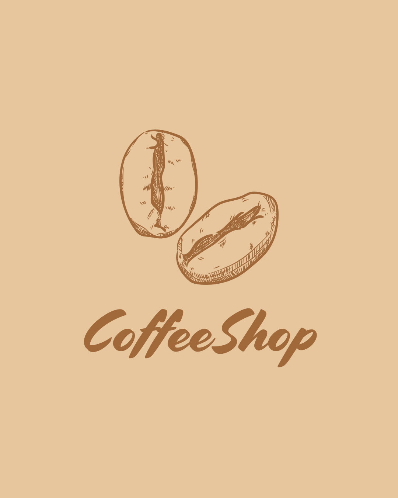

Coffee Shop
Coffee Shop is a mobile-only UX project created to improve the delivery and order experience for a local coffee shop. The goal was to eliminate in-store waiting lines by allowing users to order directly from their phones and pick up their drinks when ready.
This project focused on accessibility, usability, and streamlining the coffee ordering experience from anywhere — be it your home or your office.
Context & Challenge
The main challenge was to create a tool that avoided long lines at the counter without sacrificing service quality. The solution was to develop an app that included the menu, allowed real-time ordering, and facilitated pickup — all from a user-friendly interface.
My Role
- Conducted competitive analysis
- Defined personas and user stories
- Mapped the information architecture
- Designed low-fidelity wireframes and hi-fi prototypes
- Applied design principles such as scale, motion, and consistency
- Created a base design system
Research
I conducted user interviews to understand ordering habits and frustrations. Most participants found it appealing to have a fast, clear way to order drinks — especially if the interface felt familiar and accessible.
Design Process
- User stories & problem statement
- Competitive audit & research
- Wireframes & architecture
- Visual design & hi-fi prototyping in Figma
Mockups
Learnings
This project helped me deepen my understanding of visual hierarchy, scale, interaction gestures, and the importance of consistency in mobile-first design. It also reinforced the importance of designing with the user’s everyday context in mind.